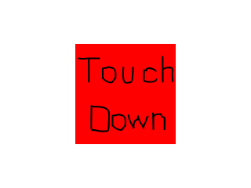

Touches

Last Updated 6/14/15
Now that we know how to load images on mobile, it's time to handle touch input events.//Scene textures
LTexture gTouchDownTexture;
LTexture gTouchMotionTexture;
LTexture gTouchUpTexture;
For this demo we'll a set of textures we'll be using to indicate what type of touch event happens.
//Main loop flag
bool quit = false;
//Event handler
SDL_Event e;
//Touch variables
SDL_Point touchLocation = { gScreenRect.w / 2, gScreenRect.h / 2 };
LTexture* currentTexture = &gTouchUpTexture;
We'll need to keep track of the touch location and the current touch
texture. Here we're setting the default touch location as the center of
the screen and the default touch texture to the touch up texture.
//Touch down
else if( e.type == SDL_FINGERDOWN )
{
touchLocation.x = e.tfinger.x * gScreenRect.w;
touchLocation.y = e.tfinger.y * gScreenRect.h;
currentTexture = &gTouchDownTexture;
}
//Touch motion
else if( e.type == SDL_FINGERMOTION )
{
touchLocation.x = e.tfinger.x * gScreenRect.w;
touchLocation.y = e.tfinger.y * gScreenRect.h;
currentTexture = &gTouchMotionTexture;
}
//Touch release
else if( e.type == SDL_FINGERUP )
{
touchLocation.x = e.tfinger.x * gScreenRect.w;
touchLocation.y = e.tfinger.y * gScreenRect.h;
currentTexture = &gTouchUpTexture;
}
When you interact with a touch display, you generate a SDL_TouchFingerEvent. When the touch starts you get a SDL_FINGERDOWN event, when you move around
your finger a SDL_FINGERMOTION happens, and when you release your touch you get a SDL_FINGERUP.
Touch events function pretty much like mouse events with one major difference: touch coordinates are normalized. This means instead of going from 0 to 640 (or what ever the size of your mobile display), they always go from 0 to 1. To get the touch coordinates in screen coordinates simply multiply the touch coordinates by the screen resolution. If you look at the code above that's exactly what we're doing here, along with setting the corresponding texture for the given touch event.
One thing not covered here is handling multiple fingers. All we do here is handle the most recent touch event. If you want to handle more than one finger, just keep track of them with their touch IDs. The touch IDs aren't simple 0, 1, 2, etc but a 64bit integer version of the pointer to the touch data. This quirk has tripped people over before so keep it in mind.
Touch events function pretty much like mouse events with one major difference: touch coordinates are normalized. This means instead of going from 0 to 640 (or what ever the size of your mobile display), they always go from 0 to 1. To get the touch coordinates in screen coordinates simply multiply the touch coordinates by the screen resolution. If you look at the code above that's exactly what we're doing here, along with setting the corresponding texture for the given touch event.
One thing not covered here is handling multiple fingers. All we do here is handle the most recent touch event. If you want to handle more than one finger, just keep track of them with their touch IDs. The touch IDs aren't simple 0, 1, 2, etc but a 64bit integer version of the pointer to the touch data. This quirk has tripped people over before so keep it in mind.
//Clear screen
SDL_SetRenderDrawColor( gRenderer, 0xFF, 0xFF, 0xFF, 0xFF );
SDL_RenderClear( gRenderer );
//Render touch texture
currentTexture->render( touchLocation.x - currentTexture->getWidth() / 2, touchLocation.y - currentTexture->getHeight() / 2 );
//Update screen
SDL_RenderPresent( gRenderer );
As you can see in our rendering, we just render the touch texture at the touch position.